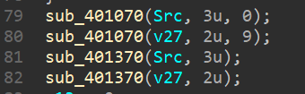
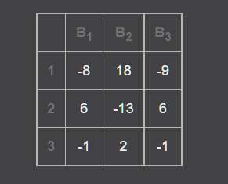
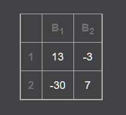

最近有点懒，好久没有更新了，就决定把近期的一些题目一起放上来了
- [N1CTF 2021]babyrust
- [N1CTF 2021]Py
- [L3HCTF 2021]double-joy
- [L3HCTF 2021]Load
TODO:
- [L3HCTF 2021]idaaaaaaaa
[N1CTF]babyrust
题目直接给了Rust源码，之前没有见过，现查文档学习
首先main函数里只是调用了一个 check!
1 | let result = check!(@s /*your answer*/); |
main 上面就是 check 的实现
1 | macro_rules! check { |
macro_rules! 是个宏定义，里面的 @s，@e 应该是类似字符串匹配的东西
一开始的 (@s n1ctf{$Never:tt}) 就把flag中去除 n1ctf{} 的部分存到了 $Never 变量中，stringify! 将其转换为字符串常量
stringify!为 Rust 内置宏。其接收一个 Rust 表达式，如 1 + 2 ， 然后在编译时将表达式转换为一个字符串常量，如 “1 + 2” 。
接下来的宏定义有很多类似这个的：
1 | (@e ($Never:expr,$Gonna:expr,$Give:expr); (Never gonna give you up $($code:tt)*)) => { |
理解一下大概就是根据传入的 code 字符串开头是否为 Never gonna give you up，来判断是否进入这个定义，所以判断是一个根据字符串内容实现的Rust的简单vm，指令就是对 $Never, $Gone, $Give三个变量进行变化
为了快速分析，直接在各个指令上加个输出，然后编译运行，会发现整体逻辑大概就是：
1 | $Gonna = $Never[$Give]; // 将当前位置数据取出 |
于是修改代码如下：
1 | // 添加在开头 |
加密只有加减法，所以偏移始终相等
1 | cipher = [ |
[N1CTF]Py
首先解包elf，能在目录下得到两个pyc
修改文件头，0a5n.py 为
1 | import L |
L.py 中有乱码，还原字节码能得到两个exec
1 | z = ''.join([chr(i ^ 2) for i in z]) |
这里实际还原出来的是 << 运算，根据z中的数据猜测实际为 ^
能得到一个smc
1 | key = 0 |
手动patch一下pyc文件，uncompyle6反编译后自己修复一下变量名，发现很多函数的逻辑很奇怪，根据刚才异或运算被解释成了左移运算，题目中的vm可能对基础运算符的opcode进行了相互的调换
通过使用的参数和函数的形式，猜测应该是个ECC算法，对其进行还原（这里只猜到了opcode被替换，但没有想到去哪里查看新的opcode）
肉眼还原了一下运算：把 & 换成 |， | 换成 <<，<< 换成 ^，^ 换成 +，+ 换成 %，% 换成 -，- 换成 *，** 换成 //，>> 换成 &
0a5n.py:
1 | import L |
L.py:
1 | def inv_mod(b, p): |
接下来只需要寻找 from var import * 中的 var 即可
根据pyinstxtractor.py的报错，发现 magic number 和 python3.5 差了1，于是找到报错的位置，将工具对 MAGIC_NUMBER 的检查去掉
1 | if pyc_magic != pycHeader: |
用python3.5进行解包，可以得到 var.pyc.encrypt
手动解密
1 | import zlib |
得到ECC的曲线和点
1 | p = 0xfffffffffffffffffffffffffffffffeffffac73 |
上网抄了个sage实现的Pohlig-Hellman进行求解
1 | p = 0xfffffffffffffffffffffffffffffffeffffac73 |
得到的结果计算十六进制并反转就是最后的flag
赛后查看了一下官方的WP，发现opcode就在 opcode.pyc 里面，因为一开始没有解包出来 opcode.pyc 所以就没有想到这里
1 | """ |
这下就很舒服了（如果全都改乱了，就得写个脚本全改回去了，不过这样的话这个程序是不是也看不懂了）
[L3HCTF 2021]double-joy
恢复jmp表，发现是个vm，写一下反汇编
1 | opcode = [] |
动调发现，总共有两个vm，flag的内存被共享，其他的状态分别保留，两个vm依次执行（能看到中间某个循环末尾有个return）分别是xtea加密和tea加密，相当于同时进行xtea和tea加密了写个求解脚本
需要注意是程序中为int类型，运算需要和题目中的一致（不能用位运算）
1 |
|
[L3HCTF 2021]Load
这题使用了进程镂空技术（找时间研究室一下这一系列的技术），需要先把PE文件提取出来
动调进入镂空的函数，会发现一个对PE的比较，网上找可以找到MZ头（name字符串下面），dump下来即可
分析PE
首先提取了flag的中间部分，随后将其两两一组转化成16进制，共13字节

401070函数是将13字节拆成9和4字节分别存入src和v27，分别是33和22的矩阵
401370函数较大，且调用了一个递归函数
1 | v11 = mul_matrix_4012A0(v17, v6) * a1[v5]; |
分析发现函数计算递归后与第一行的一个数字相乘，并根据奇偶进行加法和减法，重写该函数并验证后发现是求解矩阵行列式
再分析401370函数时发现，函数使用了一个数字除以行列式，猜测是用来求解逆矩阵的
调用完401370后就是验证部分，只需要满足所有等式即可
使用在线网站求解逆矩阵


1 | flag = [-8, 18, -9, 6, -13, 6, -1, 2, -1, 13, -3, -30, 7] |